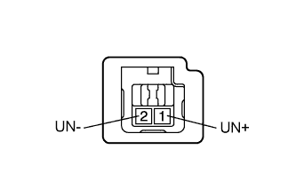

СИСТЕМА ОПОВЕЩЕНИЯ О КЛЮЧЕ, ОСТАВЛЕННОМ В ЗАМКЕ ЗАЖИГАНИЯ > Не звучит сигнал предупреждения об оставлении ключа в замке зажигания |
| 1.СНИМИТЕ ПОКАЗАНИЯ ПОРТАТИВНОГО ДИАГНОСТИЧЕСКОГО ПРИБОРА (ВЫКЛЮЧАТЕЛЬ ОСВЕЩЕНИЯ ПЕРЕДНЕГО ДВЕРНОГО ПРОЕМА) |
Проверьте в режиме Data List работу выключателя освещения проема передней двери (Нажмите здесь).
Для моделей с левосторонним рулевым управлением:
| Информация на дисплее прибора | Измеряемая величина / диапазон измерения | Нормальное состояние | Замечание по диагностике |
| FL Door Courtesy | Сигнал выключателя освещения проема левой передней двери / ON (ВКЛ) или OFF (ВЫКЛ) | ON (ВКЛ): Левая передняя дверь закрыта OFF (ВЫКЛ): Левая передняя дверь открыта | - |
Для моделей с правосторонним рулевым управлением:
| Информация на дисплее прибора | Измеряемая величина / диапазон измерения | Нормальное состояние | Замечание по диагностике |
| FR Door Courtesy | Сигнал выключателя освещения проема правой передней двери / ON (ВКЛ) или OFF (ВЫКЛ) | ON (ВКЛ): Правая передняя дверь закрыта OFF (ВЫКЛ): Правая передняя дверь открыта | - |
|
| ||||
| OK | |
| 2.СНИМИТЕ ПОКАЗАНИЯ ПОРТАТИВНОГО ДИАГНОСТИЧЕСКОГО ПРИБОРА (ДЛЯ ВЫКЛЮЧАТЕЛЯ РАЗБЛОКИРОВКИ КЛЮЧА) |
Проверьте в режиме Data List работу датчика предупреждения о разблокировке (Нажмите здесь).
| Информация на дисплее прибора | Измеряемая величина / диапазон измерения | Нормальное состояние | Замечание по диагностике |
| Key Unlock Warning SW | Сигнал выключателя разблокировки ключа / ON (ВКЛ) или OFF (ВЫКЛ) | ON (ВКЛ): Ключ вставлен в замок зажигания OFF (ВЫКЛ): Ключ не вставлен в замок зажигания | - |
|
| ||||
| OK | ||
| ||
| 3.ПРОВЕРЬТЕ ВЫКЛЮЧАТЕЛЬ РАЗБЛОКИРОВКИ КЛЮЧА В СБОРЕ |
|  |
Снимите выключатель разблокировки ключа (Нажмите здесь).
Измерьте сопротивление в соответствии со значениями, приведенными в таблице ниже.
| Контакты для подключения диагностического прибора | Положение переключателя | Заданные условия |
| 1 (UN+) - 2 (UN-) | Не нажат | 10 кОм или более |
| Нажат | Менее 1 Ом |
|
| ||||
| OK | |
| 4.ПРОВЕРЬТЕ ЖГУТ ПРОВОДОВ И РАЗЪЕМ (ДАТЧИК ПРЕДУПРЕЖДЕНИЯ О РАЗБЛОКИРОВКЕ - ГЛАВНЫЙ ЭБУ КУЗОВА И МАССА) |
Отсоедините разъем G3 датчика предупреждения о разблокировке.
Отсоедините разъем G64 главного ЭБУ кузова.
Измерьте сопротивление в соответствии со значениями, приведенными в таблице ниже.
| Контакты для подключения диагностического прибора | Условие | Заданные условия |
| G3-1 (UN+) - G64-17 (KSW) | Всегда | Менее 1 Ом |
| G3-2 (UN-) - масса | Всегда | Менее 1 Ом |
| G64-17 (KSW) – масса | Всегда | 10 кОм или более |
|
| ||||
| OK | |
| 5.ПРОВЕРЬТЕ РАЗЪЕМ ЩИТКА ПРИБОРОВ В СБОРЕ (В ДЕЙСТВИИ) |
Временно замените щиток приборов новым или заведомо исправным (Нажмите здесь).
Проверьте систему предупреждения об оставлении ключа в замке зажигания (Нажмите здесь).
|
| ||||
| OK | ||
| ||